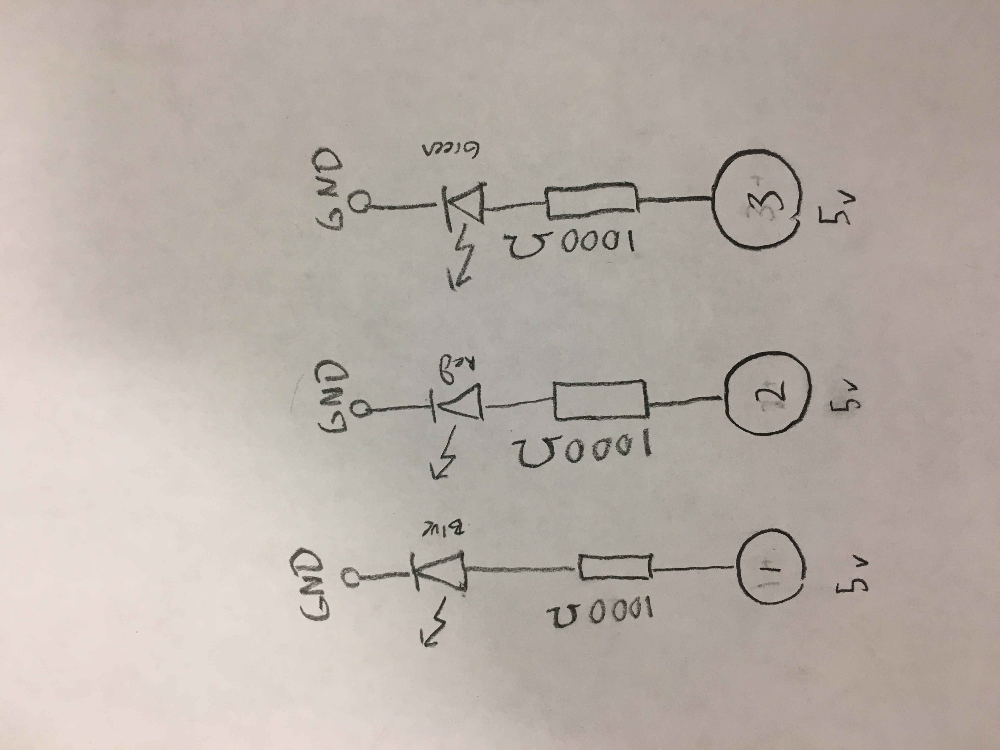

Espen Scheuer's Assignment 1!
Here is a video of assignment 1.

Here is a photo of assignment 1.

The led is rated for about 20 milli amps A (=0.02A) and the arduino has 5 volts
Using Ohms law: R = V / I = 5 / 0.02 = 250) so I choose one close to that but higher 1000 
Here is the code for assignment 1:
void setup() {
// initialize digital pins
pinMode(1, OUTPUT);
pinMode(2, OUTPUT);
pinMode(3, OUTPUT);
}
// Runs the three leds in one order for a given time
void normalRun(int time) {
digitalWrite(1, HIGH);
delay(time);
digitalWrite(1, LOW);
digitalWrite(2, HIGH);
delay(time);
digitalWrite(2, LOW);
digitalWrite(3, HIGH);
delay(time);
digitalWrite(3, LOW);
}
// Runs the three leds in opposite order for a given time
void reverseRun(int time) {
digitalWrite(3, HIGH);
delay(time);
digitalWrite(3, LOW);
digitalWrite(2, HIGH);
delay(time);
digitalWrite(2, LOW);
digitalWrite(1, HIGH);
delay(time);
digitalWrite(1, LOW);
}
// the loop function runs over and over again forever
void loop() {
// These for loops run the pins in one order for decreasing increments of time
for(int i = 1000; i > 100; i -= 200){
normalRun(i);
}
for(int i = 200; i > 20; i -= 20){
normalRun(i);
}
// These for loops run the pins in opposite order for decreasing increments of time
for(int i = 1000; i > 100; i -= 200){
reverseRun(i);
}
for(int i = 200; i > 20; i -= 20){
reverseRun(i);
}
}